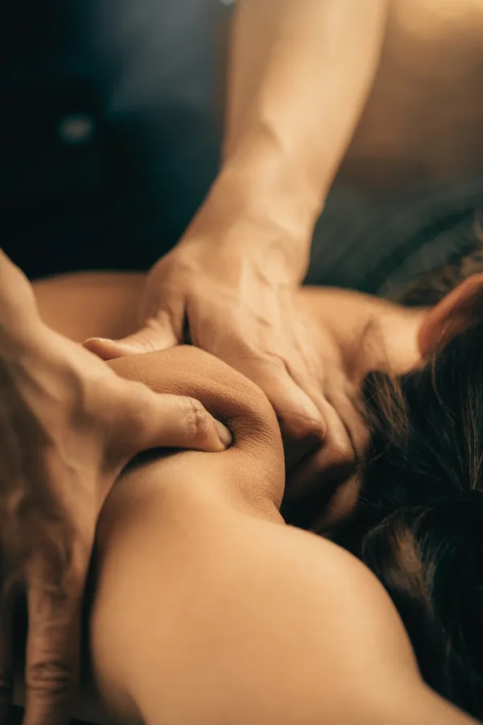
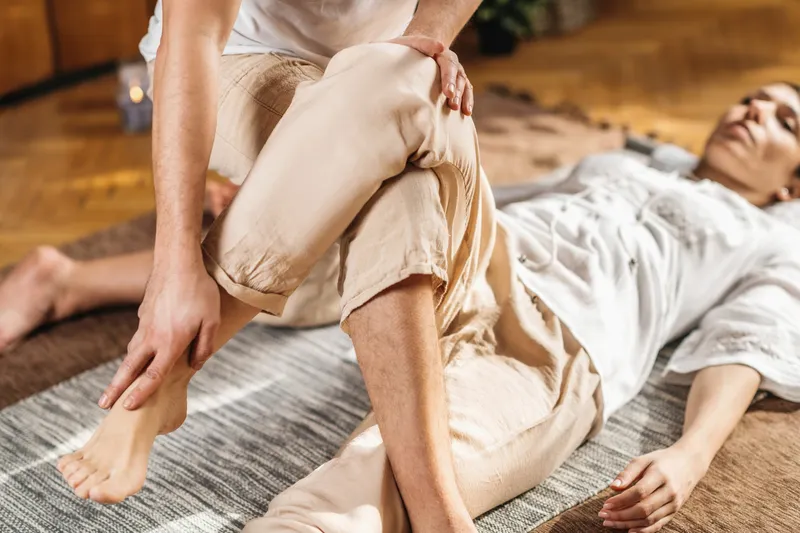
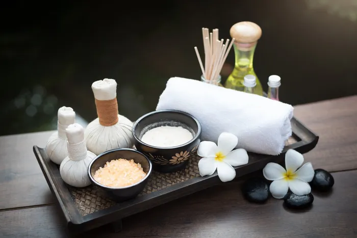
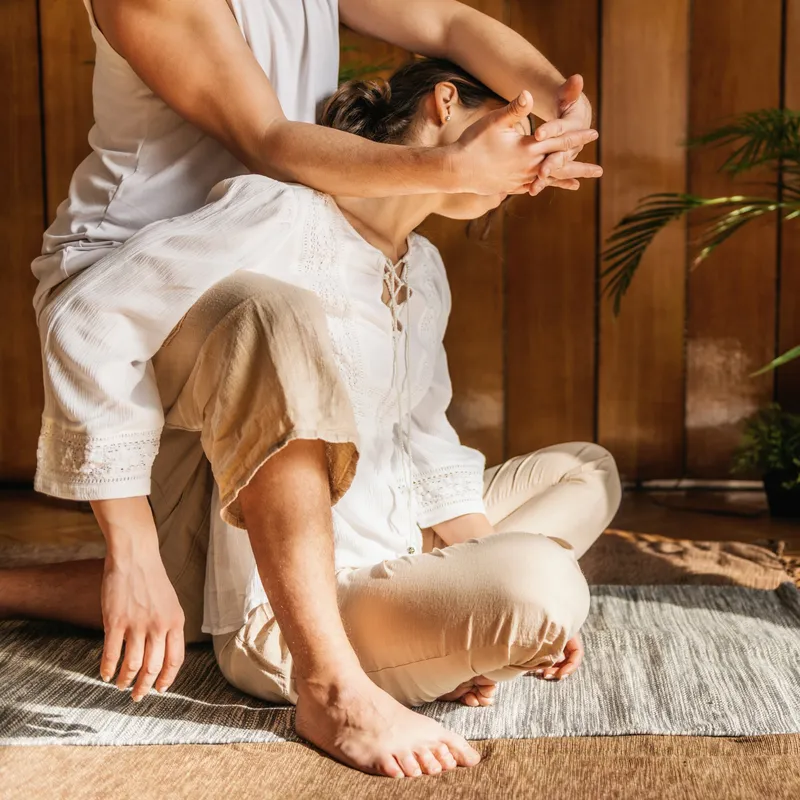
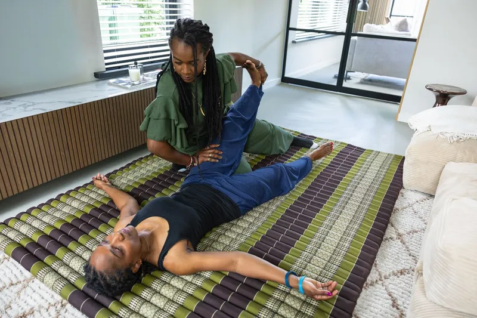
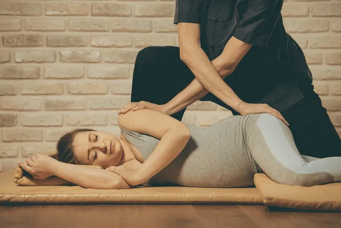

Afgestemd op jou
Elke behandeling begint met een korte intake over wat jouw lichaam nodig heeft.
"Na twee behandelingen waren mijn klachten verdwenen."

Elke behandeling begint met een korte intake over wat jouw lichaam nodig heeft.

Traditioneel op een mat, met strekkingen en drukpunten over je kleding heen.

Bij de oliemassages werkt Juniska met natuurlijke olie en Thaise balsem.

Rug, nek of schouders: in de reviews lees je hoe vaak klachten verdwenen.
Traditioneel, deep tissue of tijdens je zwangerschap. 30, 60 of 90 minuten.
Bekijk massages en prijzen
Gratis proeflesHatha yoga, pilates en Thaise yogamassage leren geven.
Bekijk het rooster April 2027Een week Málaga, of een workshop met je team of vrienden.
Bekijk de retraite Vanaf € 45Geef iemand rust cadeau. Bestel hem hier op de site.
Stel je cadeaubon samen
60 minutenZacht en ondersteunend voor jou en je baby.
Lees meerThaise massage therapeut, yogadocent en begeleider van retraites. In mijn praktijk in Heerlen werk ik met traditionele Thaise yogamassage: een eeuwenoude mix van yoga, acupressuur en strekkingen langs de energielijnen van je lichaam.
Ik kijk naar jou als mens, niet alleen naar je klacht. Daarom neem ik voor en na je behandeling de tijd.
Only pressure in life should be massage therapy.Het motto van Cura Thai
Kies je massage in de app en plan je moment. Betalen kan met iDEAL.
Je vertelt waar je last van hebt en wat je wilt bereiken.
Met kleding aan: drukpunten, strekkingen en ruimte om los te laten.
Je komt rustig bij, met een kopje thee en tips voor thuis.
Een week lang mocht alles even stilvallen, en dat was precies wat deze retraite zo bijzonder maakte. Juniska creëert een omgeving waarin je niets hoeft en alle ruimte krijgt om naar jezelf te luisteren. Aan alles was gedacht, van fijne goodiebags tot waardevolle gesprekken. De yoga- en massagelessen waren zowel ontspannend als verdiepend. Een bijzondere ervaring voor iedereen die wil vertragen en dichter bij zichzelf wil komen.
Ik heb een massage mogen ontvangen van Juniska en voelde me vanaf het begin op mijn gemak door de prettige, ontspannen sfeer. Ze had veel aandacht voor mij als persoon. De kwaliteit van de massage is hoog; ik heb zelf ook ervaring met masseren en merkte daarna duidelijk meer ontspanning en een betere energiedoorstroming. Ook de locatie is bijzonder: geen steriele ruimte, maar een natuurlijke plek met veel lichtinval.
Ik had het geluk om mee te gaan met de eerste meerdaagse retreat in Málaga met Juniska. Het was op alle fronten een geweldige ervaring. Juniska heeft veel kennis van lichaam en geest en voelt goed aan wat je op een bepaald moment nodig hebt. Ik heb enorm genoten van de Thaise massages, yogalessen en Afro Dance, maar ook van Juniska zelf: ze is lief, zorgzaam en een prachtig mens.
Wat een bijzondere retreat van Cura Thai bij Maia Retreats. Juniska heeft veel talenten en de combinatie van verschillende yogavormen en Thaise massages helpt je volledig tot rust te komen. Haar massages voelen heel persoonlijk en intuïtief aan, met veel aandacht voor wat je lichaam nodig heeft. Ook haar enthousiasme, positiviteit en openheid zorgen voor een gevoel van verbinding en vertrouwen. Ik zou mezelf dit cadeautje veel vaker gunnen als ze dichterbij woonde.
De Thaise massage was een bijzondere beleving. Er wordt aandacht besteed aan het hele lichaam en je ontdekt soms verrassend waar spanning zit. Door je over te geven aan de massage, kun je in een diepe ontspanning komen. Vanaf het eerste moment word je op je gemak gesteld. Na afloop voelde ik rust en nieuwe energie; een ervaring die ik iedereen zou aanraden.
Ik ging met mijn bonusmoeder mee terwijl zij een Thaise oliemassage kreeg. Juniska bood mij ook een massage aan. In het begin vond ik dat best spannend, omdat het mijn eerste massage was. Juniska begon rustig en ik mocht aangeven wat ik minder prettig vond. Dat vond ik heel fijn. Vooral de massage van mijn benen voelde heerlijk. Dankjewel, Juniska!
Ik heb een bijzondere massage van Juniska gehad. Sommige momenten waren stevig, maar daarna mocht ik ook oefenpersoon zijn tijdens de cursus Thaise Yoga met Acupressuur. Het was heel leerzaam om de technieken die ik net had ervaren uitgelegd en voorgedaan te krijgen. Thuis was ik toe aan bed, maar na een heerlijke nachtrust werd ik uitgerust en vol energie wakker.
Ik ben erg geïnteresseerd in massage en maakte daardoor kennis met Juniska en haar lessen. Vanaf de eerste les was ik enthousiast. Ze geeft de lessen op een ontspannen en enthousiaste manier en heeft enorm veel kennis. De Thaise yogamassage is heerlijk om te ontvangen en na afloop merk ik dat mijn lichaam soepeler aanvoelt. De lessen zijn rustgevend en er is altijd tijd om gezellig na te praten met een kop thee.
Ik heb een prachtige ervaring gehad tijdens de yogales van Juniska. Alles voelde rustig en prettig aan, precies wat ik nodig had. Vooral de eindontspanning met de handpan was bijzonder: de klanken raakten me en brachten me helemaal tot rust. Het voelde alsof alles even stilviel. Echt een fijn moment voor mezelf.
Ik volg inmiddels ongeveer twee jaar hatha yoga bij Juniska en heb afgelopen zomer ook een paar keer een Thaise massage gehad. Beide zijn echte aanraders. Juniska is een lieve vrouw die goed met je meedenkt en fijne tips geeft. Het is heel prettig om bij haar les te volgen.
Ik heb een fantastische massage gehad die moeilijk met iets anders te vergelijken is. Tijdens een markt in Heerlen zorgde de massage voor zo veel ontspanning dat ik bijna vergat dat ik midden op straat lag. Ik voelde me daarna weer helemaal in balans. Een echte aanrader; ik overweeg serieus om samen met mijn man een cursus bij Juniska te volgen.
De massage van Juniska is echt een ervaring: stevig, met rekken en strekken, en aandacht voor het hele lichaam. De ruimte heeft een gezellige, spirituele sfeer die goed past bij haar warme persoonlijkheid. Zeker een aanrader.
Ik heb twee keer een heerlijke massage van Juniska mogen ontvangen. Ze is professioneel en warm, en neemt ruim de tijd voor je. Na de behandelingen kon ik weer vrijer ademhalen en voelde ik dat de energie beter door mijn lichaam stroomde. Een fijne ervaring met persoonlijke aandacht.
De Thaise massage bij Cura Thai was een bijzondere en ontspannen ervaring. Ik heb twee uur lang mogen genieten van Juniska's deskundigheid en aandacht. Als je echt goed wilt ontspannen, is deze massage absoluut een aanrader.
Ik heb een superfijne Thaise massage gehad en die is absoluut voor herhaling vatbaar. Ik was zo tevreden dat ik meteen een nieuwe afspraak heb gemaakt. Topervaring!
Ik kan Cura Thai zeker aanraden. Toen ik op mijn werk last kreeg van mijn rug, bood Juniska meteen hulp aan. De eerste behandeling was pittig door de pijn, maar na twee behandelingen waren mijn klachten verdwenen. Juniska heeft veel gevoel voor haar werk en wist me ook volledig te laten ontspannen. Ze is warm en energiek, en haar salon tussen het groen straalt rust uit.
Mijn eerste traditionele Thaise massage was een heel bijzondere ervaring. Ik werd warm ontvangen op een prachtige, rustige locatie met uitzicht op veel groen, midden in de stad. Juniska voerde de massage vloeiend en professioneel uit en werkt duidelijk met veel passie en aandacht. Na afloop voelde ik me rustig en goed, en de ervaring gaf me niet alleen lichamelijk maar ook geestelijk veel voldoening. Bij Cura Thai ben je in ervaren handen.
Ik heb twee Thaise massages bij Juniska geboekt vanwege lage rugpijn. De behandelingen hielpen goed om de spanning te verminderen. Een aanrader!
Juniska is een zeer vriendelijke vrouw die met veel aandacht rekening houdt met de wensen van haar klanten. Haar Thaise massages voelen deskundig en zorgvuldig aan. Na de behandeling voelde ik me opgefrist en vernieuwd; het was een weldaad voor mijn lichaam.
Ik heb een ontzettend fijne massage gehad. Juniska's positieve energie hielp me om volledig te ontspannen. Ze nam alle tijd voor me, zowel voor als na de massage. Ik kon alles vragen en ze luisterde goed en gaf duidelijke antwoorden. Een echte aanrader.
Een hele fijne ervaring waarbij ik me meteen op mijn gemak voelde. Ook de locatie is erg mooi en draagt bij aan de ontspannen sfeer. Zeker een aanrader.
Dankzij de yogalessen durf ik weer op beide knieën te steunen, ondanks mijn twee knieprotheses. Daar ben ik heel blij mee. Dank je wel voor de begeleiding!
Ik voelde me meteen thuis in het retraitehuisje. De massage was geweldig en het resultaat was heel goed: mijn klachten zijn verdwenen. Een fijne ervaring waarvoor ik dankbaar ben.
Zeven dagen yoga, Thaise massage en stilte in een villa met zwembad aan de Spaanse kust. Jij hoeft nergens aan te denken.

Boek je massage online, of stel eerst je vraag via WhatsApp.